005：【kenshi】砂の国日記001
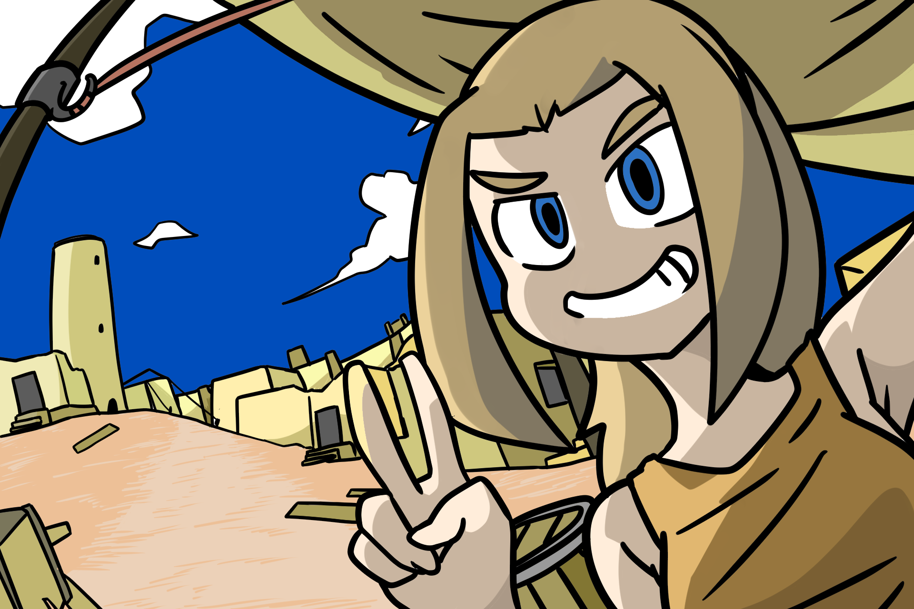
どうも、皆さん……鈴森シラセです。
今回から「kenshi」のプレイ日記をつけていきたいと思います。
キャラクターはこんな感じ。私のビジュアルを微妙に落とし込んだと思います。
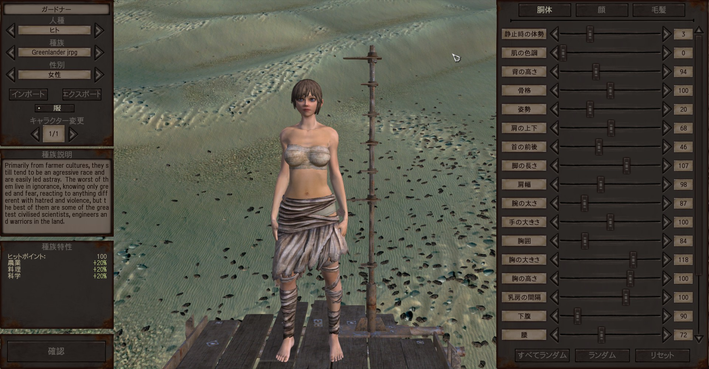
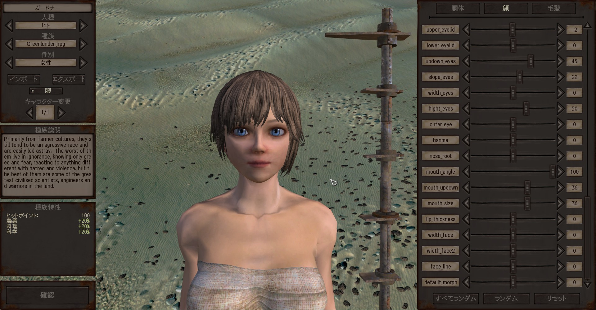
かわいいけど不気味の谷を感じる。
何はともあれ、さっそく始めていきましょう。
ボーダーゾーンへ
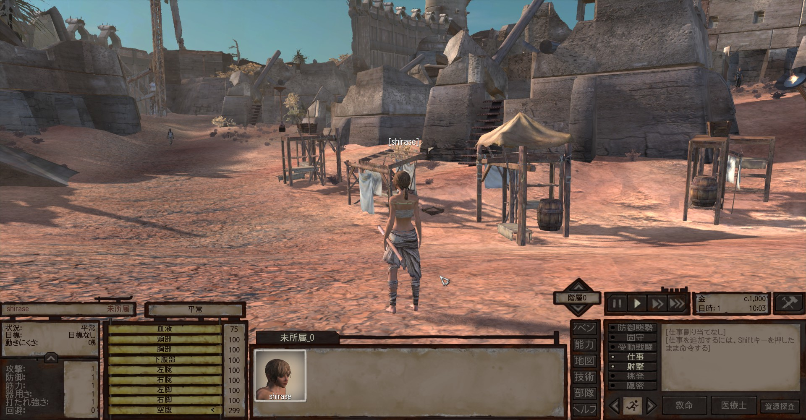
そこは無法地帯でありました。
ボーダーゾーン。複数の国家や勢力の領土の境界に位置し、各勢力間の争いや、ならず者の徘徊によって荒廃した地域です。
私がスポーンしたのはハブと呼ばれる都市。追放者の町だそうです。
まずは近くで金策です。

この荒廃しきった世界でも、いや、荒廃しているからこそ先立つものは大切なようであります。慈悲も救いもありません。
仲間を雇い、物資や食料を調達し、時にはお金で問題を解決する必要もあります。
序盤の金策は何といっても採掘です。
その辺の岩をよく見ると、普通の岩と見た目が違うものが混ざっています。
こういう色の違う石を掘り、鉄だの銅だのを採って売りさばくのです。
丸一日延々と石を掘り、採った銅を売り捌き、日が暮れてからハブにある小さなバーへ入ります。
仲間を雇うためです。
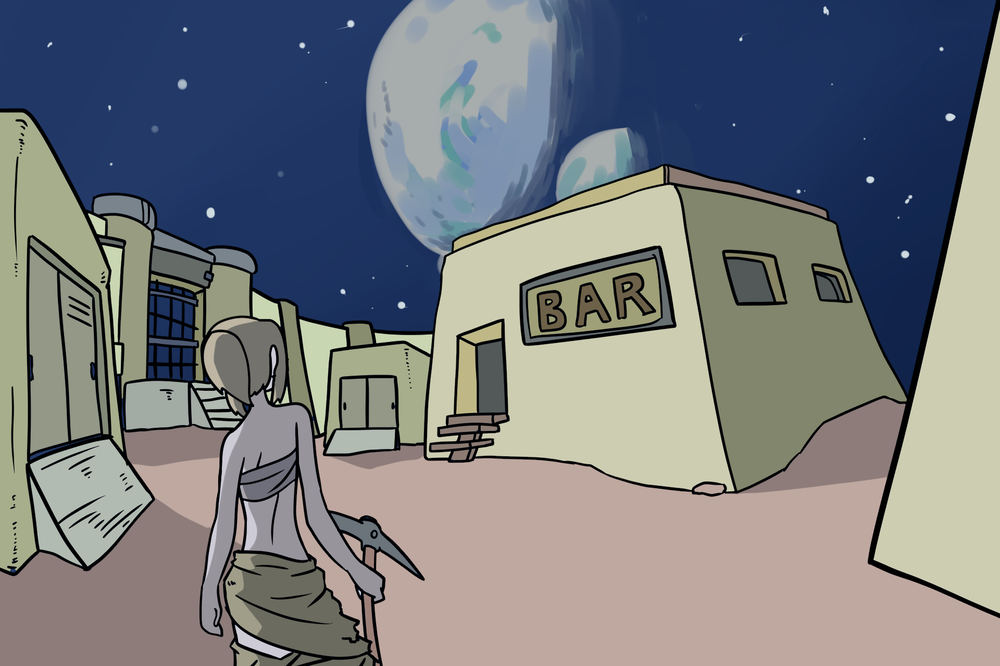
こんな与太者の仲間になってくれるような暇人は、大概バーにいます。
彼ら自身も失業したり、借金を負って逃げてたり、逃亡した奴隷上がりだったりが多いようですね。世知辛いったらありゃしない。
さて、適当な暇人を口説いて連れていきましょう。
良さげなのはいますかねぇ……。
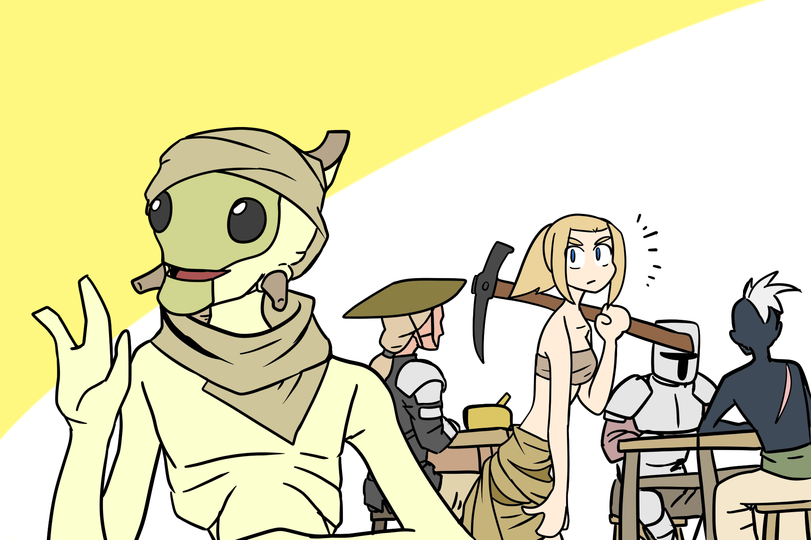
珍しいな、ハイブ族がいますね。
ハイブは女王を頂点に、ハチやアリに似た分業社会を形成する虫っぽい種族で、私がkenshiで一番好きな種族です。
その辺でぷらぷらしてるような奴は、何らかの事情でコロニーを追放された個体なのですが……ハイブが住む地域からもほど近いボーダーゾーンでは、なぜかあまり見かけないんですよね。
彼はハイブから追放されたあと酒屋をやっていたそうですが、家を追い出されてここにいるようです。
大変な人生だったようですね。
彼を仲間に引き入れましょう。ハイブ大好き。
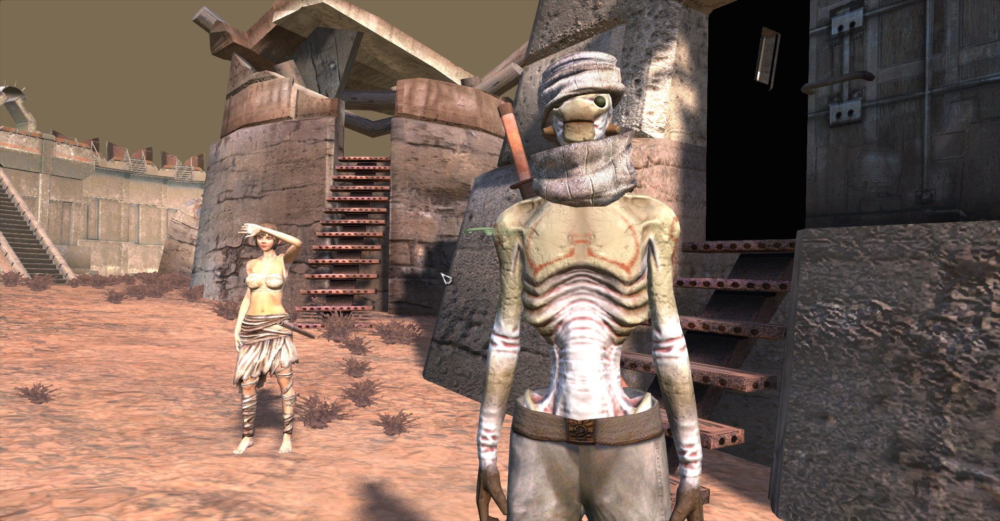
今後しばらくは醸造の技術が活きることはないでしょうが、仲間になってくれるとのことなのでいいでしょう。
そのうち生活が安定してきたら彼のために酒蔵を建ててやりたいですね。
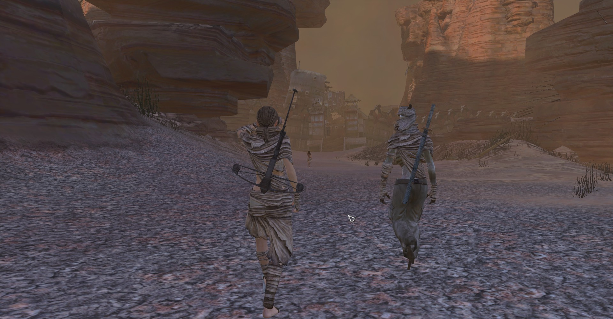
mat君と名付けた彼を連れ、近くにあるスクインの街へ向かいます。 ハブに比べたらだいぶ品ぞろえが良いので、ここで最低限の武器防具や雑貨類を調達するつもりです。
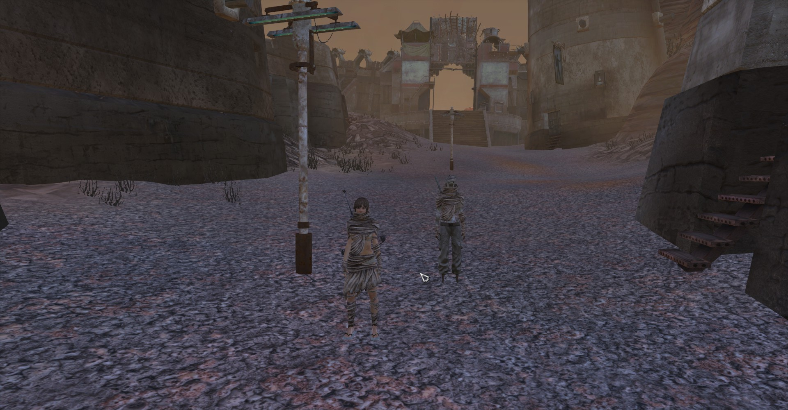
街に誰もいません。
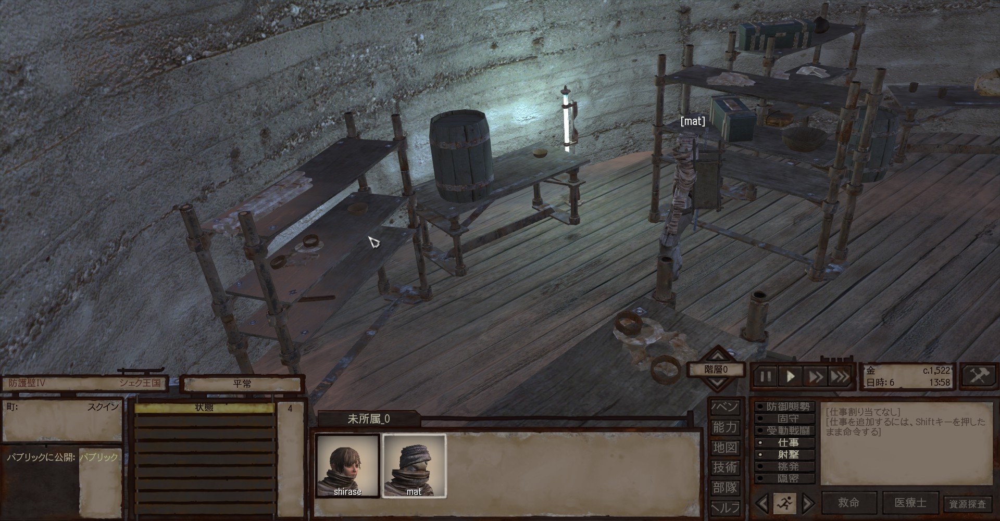
待てど暮らせど誰も家から出てきません。
探しても住民の姿は見れません。 ゴーストタウンです。ミステリーです。20年後くらいに都市伝説になるやつです。
恐らくバグでしょう。
たまに都市の住民がいなくなることがあるっぽいんですよね。
住民が一人もいない以上、物資を買いそろえるのは不可能。
仕方ないので予定を変更していきましょう。
略奪だ！
ここの物資を盗んでいこうと思います。
街一個分の物資を売れば、相当な金になるはずです。
いうなれば建物の形をした金鉱山。 家という家を漁り、カギというカギを開け、金目のモノをあるだけ奪いつくします。
すっからかんになるまで。
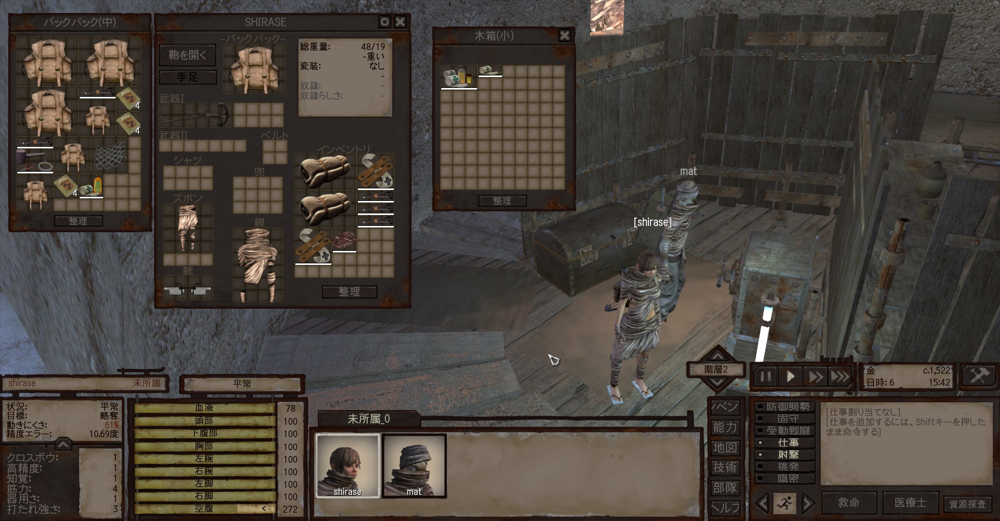
よく売れるのは装備品ですね。
ある程度のグレードがあれば、鎧や兜は良い金になるんですよね。
装備してもいいですから、最優先で略奪します。
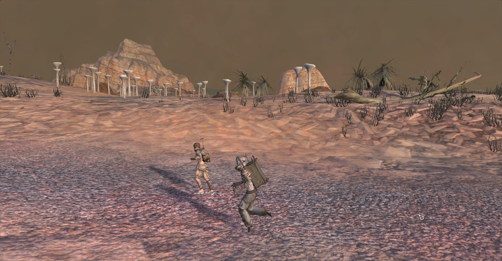
盗んだ装備をボーダーゾーンで売っぱらいます。
さすがは無法地帯、盗品でも特に問題なく捌けてしまいますね。
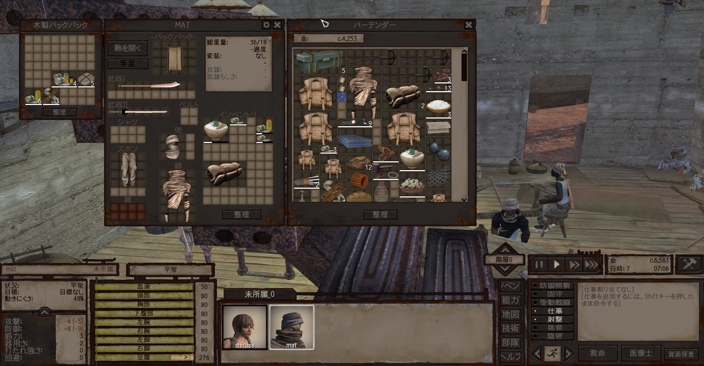
石掘りだの賊狩りだのよりよっぽど儲かる。
ゴーストタウン様々です。
始めたときには着の身着のままの貧乏人ですが、あっという間に小金持ちです。
バグをいい様に使った略奪でひと財産築いたとは誰にも言えませんが、良い滑り出しですね。
この金を元手に、次回から旅をしていこうと思います。
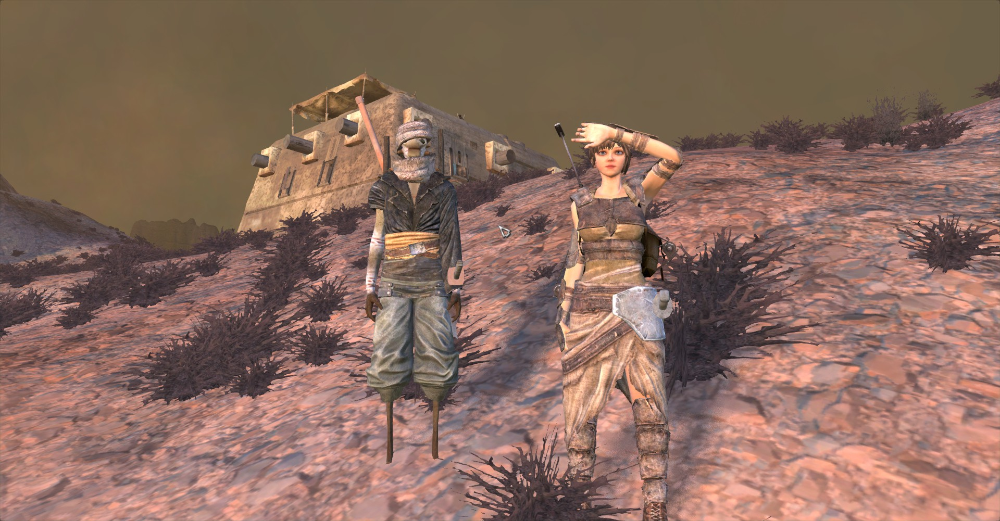
仲間ももう一人か二人くらいほしいですね。
次回は年明けの投稿となるでしょう。
よいお年を。また。